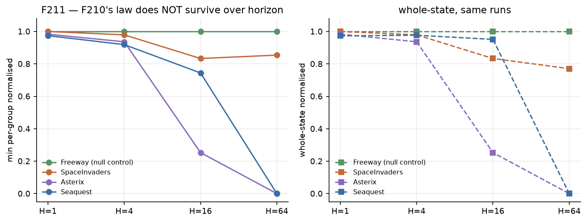

Can typed authoritative state be the interface a world model actually speaks? And if so, what do its factorization, its stochasticity and its state coverage each cap? · last updated 2026-08-28
▶ Play the world model → The trained 5M-parameter network runs in your browser: press a key, it emits the next authoritative state one 4-bit digit at a time, and the page draws whatever it emitted. No game engine is involved. Also on that page: VoxelWorld's first-person simulator, playable, so the view-changing substrate can be felt rather than described.
All nine environment families → Every benchmark on the bench with truth-vs-model rollouts, what each one is for, and — for the three we do not use — why not.
Most video world models predict pixels from a stack of past frames.
This project asks what happens if the model instead predicts the authoritative
game state — the typed record a real multiplayer server keeps and every client
renders from. That swap makes something possible that pixel models cannot do:
because we own the simulator, we can branch it from the same
(state, action) many times and read off the best score any model
could possibly get. Every number below is reported against that ceiling, plus
a degenerate floor. Raw accuracy on its own is not a claim we make.
A deterministic, snapshot-restorable simulator emits episodes. Each state is
serialised by a verify-then-write nibble codec — every field is packed into
4-bit digits against a range derived from the data, and an out-of-range value
raises rather than being clipped, so an impossible state can never be silently
written. A small causal Transformer (~5 M parameters, d_model 256, 6 layers)
reads [BOS, action, current state, OUT] and autoregressively emits the
next state's digits. At evaluation the model is rolled forward on its own
predictions for 1/4/16/64 ticks, never repaired, and scored against (a) the
model-free ceiling obtained by branching the real simulator K=64 times, and
(b) a do-nothing floor. Differences below ~20 pp ship with a McNemar
exact paired test.
simulator (deterministic, snapshot/restore, RNG recorded)
│
├─ episodes ──► nibble codec ──► [BOS | action | state_t | OUT | state_t+1]
│ verify-then-write │
│ (out of range ⇒ raise) ▼
│ causal Transformer ~5M
│ (LogicEngine, d=256, L=6)
│ │
│ ▼
│ autoregressive rollout H = 1/4/16/64
│ NEVER repaired
│ │
└─ branch K=64 from the SAME (S,A) ──► ┌────┴─────┐
model-free ceiling C1_joint │ scored │
stochasticity p_stoch │ against │
do-nothing floor frozen-state └────┬─────┘
▼
ceiling-normalised exact + McNemar paired verdict
The point of this table is that the raw numbers mislead in opposite directions. Asterix reads 0.859 and SpaceInvaders reads 0.984 at H=1; but Asterix's ceiling is 0.888 (the environment forbids more) while SpaceInvaders' is exactly 1.000 (the environment is fully deterministic, so every missing point is the model's fault). Without a ceiling those two diagnoses are indistinguishable, and the field usually reports only the first number.

| environment | H1 ceiling / model / norm | H4 | H16 | H64 |
|---|---|---|---|---|
| Freeway | 1.000 / 1.000 / 100% | 100% | 100% | 0.985 / 0.953 / 96.8% |
| Breakout | 1.000 / 1.000 / 100% | 100% | 1.000 / 0.953 / 95.3% | H32 0.656 |
| Snake | 1.000 / 1.000 / 100% | 0.970 / 0.969 / 99.9% | 0.940 / 0.938 / 99.7% | 0.910 / 0.906 / 99.6% |
| Seaquest | 0.916 / 0.906 / 99.0% | 0.689 / 0.672 / 97.5% | 0.177 / 0.141 / 79.5% | 0.0024 / 0.0 / ⚠ |
| Asterix | 0.888 / 0.859 / 96.7% | 0.651 / 0.547 / 84.0% | 0.047 / 0.0 / ⚠ | 4.5e-6 / 0.0 / ⚠ |
| SpaceInvaders | 1.000 / 0.984 / 98.4% | 95.3% | 93.8% | 1.000 / 0.781 / 78.1% |
Resolution floor, stated rather than hidden. Seaquest H64 (ceiling 0.00237) and Asterix H16/H64 (0.047 / 4.5e-6) expect 0.15 / 3.0 / 0.0003 successes in 64 starts. Reading 0.0 there is the instrument's resolution limit and must not be reported as "0% of ceiling".
The single clean target left is SpaceInvaders H64 at 78.1% with a ceiling of exactly 1.000. Every other low cell is a statement about the environment, not the model.
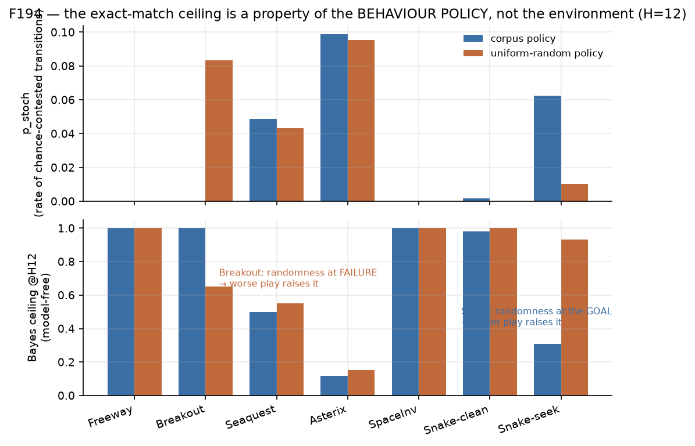
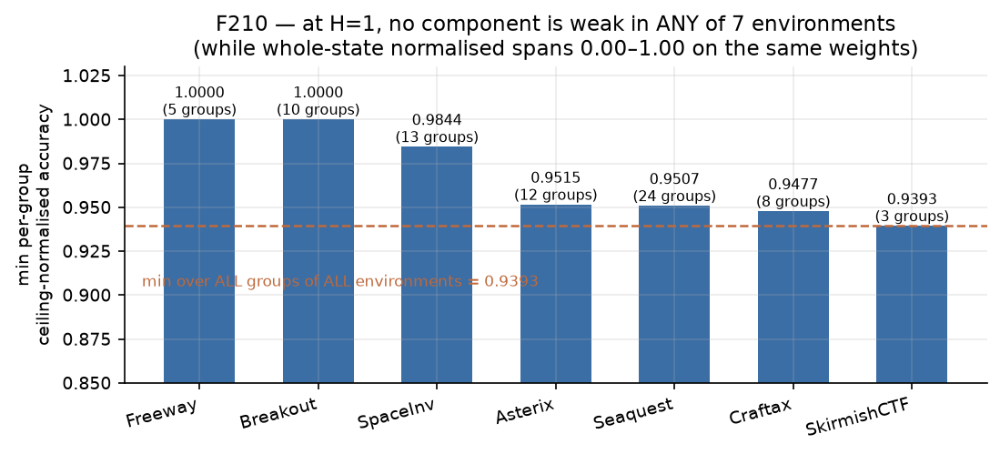

On VoxelWorld only 0.126% of state fields move per tick, so a do-nothing
predictor scored better than the trained model — the plain codec has no way to
say "unchanged". Adding a single COPY token to the vocabulary
makes the identity map exactly representable. Whole-state exact at H=1 went
0.0000 → 0.7695. Across eight
domains the effect is resolved and enormous in three, and once harmful.
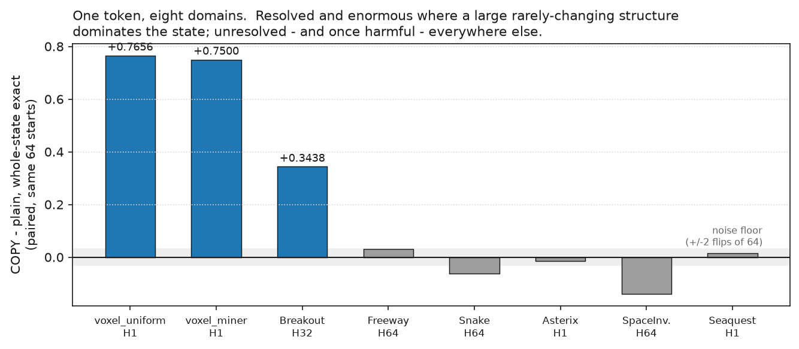
The natural explanation — "bigger states benefit more" — is dead on data we already had. Sorting the seven evaluated domains by field count gives a completely non-monotone curve: Seaquest, the largest state on the bench at 1924 fields, gains exactly 0.0000, while Breakout at 110 fields gains +0.3438. What predicts the gain is the share of state held in structures that are large and rarely changing, not the total.
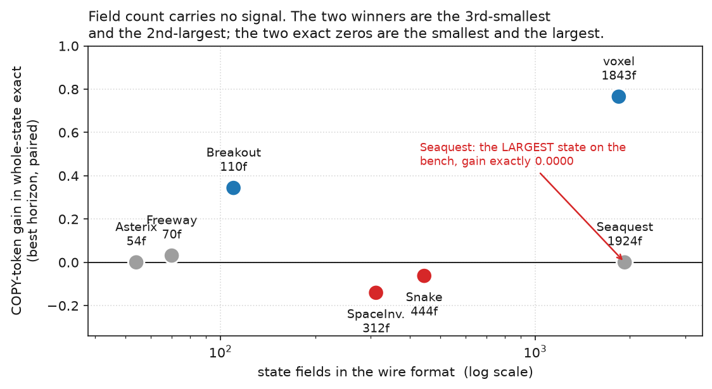
The project's core claim is that predicting each record independently and concatenating is a mean-field approximation, exact only when the records don't interact. Until now the 3-D tier had never tested it: the voxel corpus generator hard-codes one agent. Turning it on and measuring model-free — replay each tick with only agent i acting, same exogenous draw, compare — gives a clean scaling law with an unexpected shape.

At N=64 a record-wise factorised model is right about 99.5% of agent records while being wrong about the shared world in 26.6% of ticks. The two curves are 49× apart and still diverging. Report per-record exactness and the model looks healthy while getting the world wrong one tick in four — which is exactly why the shared layer needs its own metric.
Correction, 2026-08-28. This chart first went up with the voxel curve 2–3.5× too high (N=64 read 48.96%), because I measured it under a BREAK-heavy action policy while the corpora were generated with a milder one — twice the rate of the only action that can contend. The withdrawn curve is drawn faintly above so the change is visible rather than silently swapped.
What survives the correction is the part the claim rests on: still monotone and superlinear, still exactly zero below N=8, interaction components still small (max 4, so many independent pairwise contests rather than percolation), and the per-agent/shared ratio actually widens from 46× to 49×. What does not survive is the sentence "wrong every other tick".
This is the same mistake catalogued two entries above, committed in the opposite direction — there a too-weak action source manufactured a clean 0.0000 where the real effect was 0.0156. A composition-error measurement inherits the action distribution it was taken under, so it has to be measured under the same one it is quoted about.
The substrates differ in kind. In CTF a contest damages the contestants — you get shot, you lose the race to a cell — so per-player and shared errors are the same magnitude and move together. In VoxelWorld a contest damages the world: the terrain ends up different while the contestants are untouched, and the two errors are 49× apart. So on the 3-D substrate a per-record metric is decoupled from the shared-layer error; on the flat one it tracks it. That is the reason to build the view-changing tier.
Stated as structure rather than as size, deliberately. An earlier version said the 3-D substrate was "far more misleading" and backed it with a 2.8×/8.6× magnitude ratio. Once both sides were measured under their own corpus policy the ratios became 0.75× at N=8 and N=16 and 2.5× at N=32 — and the comparison was never sound anyway, since the two substrates differ in world size, density and action space, so "at the same N" is not a controlled comparison. Each substrate's own pair of curves is comparable; their levels are not.
Also settled: whether the mean-field gap is visible depends on whether the tie-break is randomised, not on how much contention there is. CTF resolves contests through a random priority permutation, so the coupling lands in the successor distribution where a ceiling can see it. VoxelWorld resolves them by fixed slot order, so nothing reaches the distribution at all. Real multiplayer servers overwhelmingly use deterministic tie-breaks — which means the whole family of distributional ceilings systematically understates factorization cost on exactly the systems this work is about.
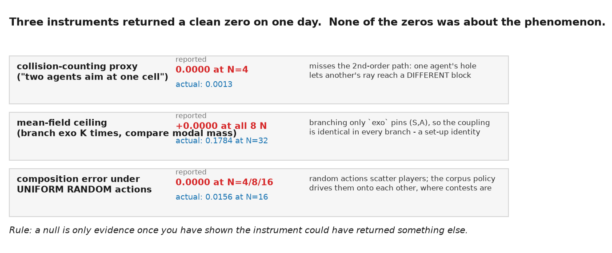
All three were caught the same way: a second measurement of the same thing
disagreed completely, which cannot happen unless one of them is not measuring it.
The mean-field ceiling is the sharpest case — it returned +0.0000 at
all eight values of N in the same output as a 0.1784 divergence rate,
because branching only the exogenous tick pins (S,A) and the coupling
is then identical in every branch. That zero was a set-up identity, not evidence.
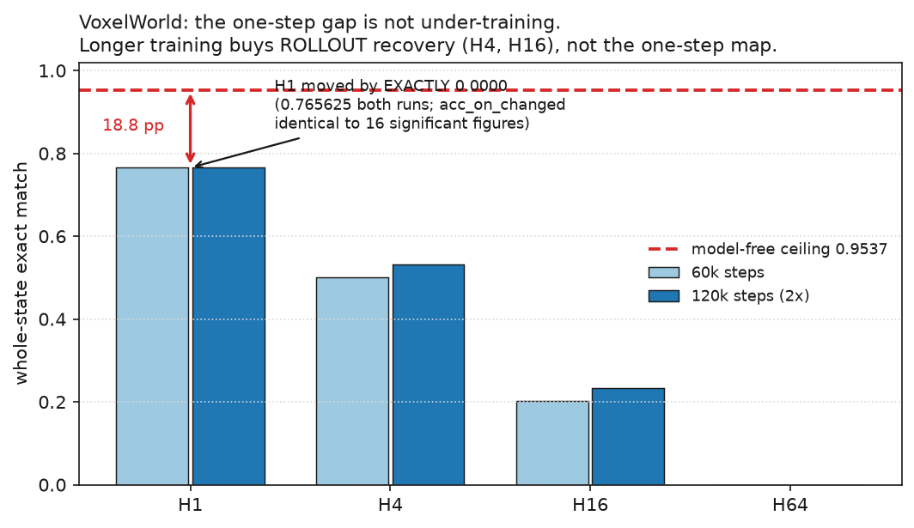
Doubling training moved H=1 by exactly nothing — 0.765625 both runs,
with acc_on_changed identical to sixteen significant figures — while
H4 and H16 each gained ~0.03. So longer training buys rollout recovery,
not a better one-step map, and the 18.8 pp to the ceiling is capacity,
architecture or representation. A capacity sweep is deliberately not
submitted until an error decomposition says whether the missing mass is recoverable
(det_wrong) or structural (stoch_impossible — a successor
no branch of the real simulator ever produced, which no metric on this bench can
currently see).
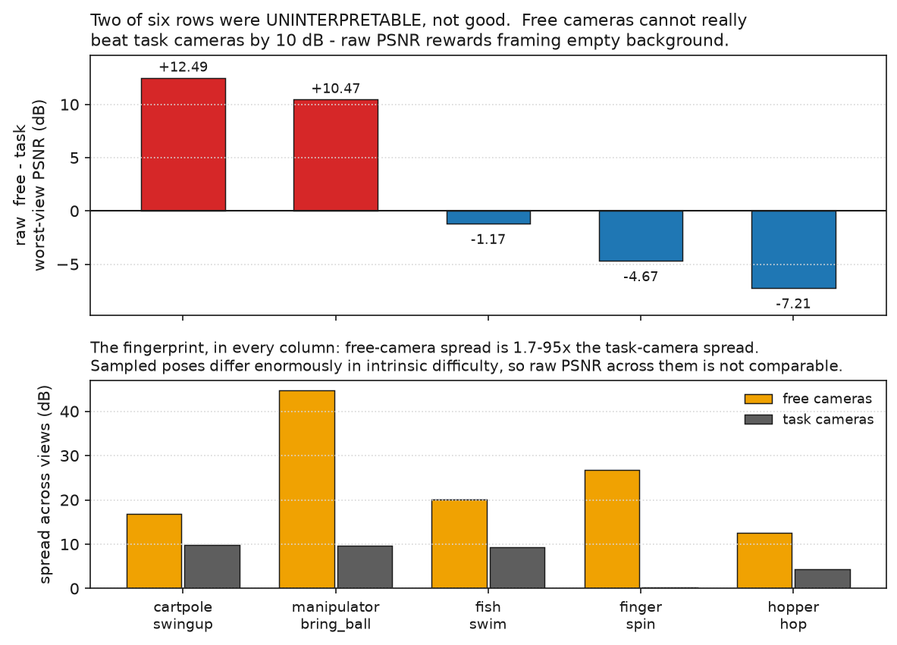
Rendering a predicted state from freely-sampled camera poses produced
+12.49 dB and +10.47 dB for two DMC domains —
free cameras apparently beating the task cameras by 10 dB. That is not a good
result, it is an uninterpretable one: raw PSNR rewards a pose that frames mostly
empty background, and free-camera spread runs 1.7–95× the task-camera spread in
every column. So each pose now also renders a frozen state and an unrelated scene,
making the headline a difference-in-differences in which the pose's own easiness
cancels. The prediction was written down before the rerun: the two positives
shrink toward zero or invert; the three already-negative rows hold, because a real
view-overfit cannot be manufactured by empty framing.

Both halves confirmed, and the ranking inverts. manipulator-bring_ball goes from the best row in the panel (+10.47) to the worst (−7.06); cartpole flips from +12.49 to −1.69; fish, finger and hopper stay negative. The mechanism is visible in the components: from free poses the model beats "nothing moved" by only +1.99 dB while from the task cameras it beats it by +9.05 dB. That is view-overfitting, and the raw metric reported it as the best result on the bench.
A second result fell out that was not predicted. Counting how many sampled viewpoints the model fails to beat the frozen initial state from, every domain starts at 0/8 at H=1 — and three of them saturate at 8/8 by H=16. Past that horizon the rollout has stopped earning anything at all from a novel viewpoint.

Of the two floors built, only one discriminates: beating a completely unrelated state is easy, so the mismatch floor is systematically generous and the frozen floor is the binding one. Reported both, headlined the strict one.
Branching the real simulator 32 times per transition splits the model's errors into cells that mean different things. Most of the gap turns out to be recoverable: on transitions where the simulator had exactly one possible answer, the model missed it 16.02% of the time, against only 3.12% where it produced a successor no branch of the simulator ever produced. That 5.1× ratio is what licensed the capacity sweep — had it come out the other way, more parameters could not have helped.
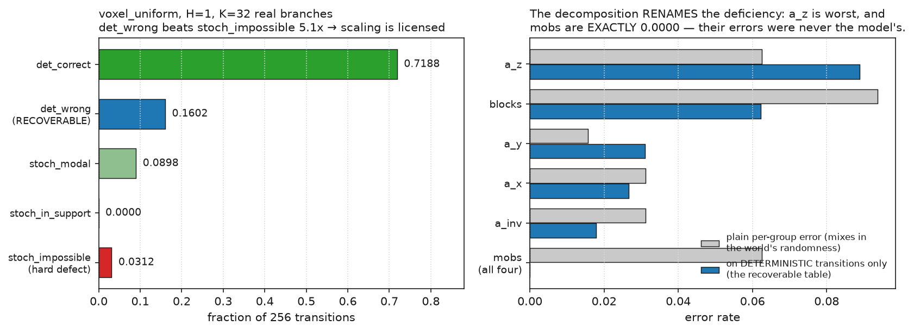
The more useful half is that the decomposition renames the deficiency.
The plain per-group table had mobs looking nearly as bad as blocks. On
deterministic transitions only, mobs are exactly 0.0000 — every mob error
belonged to the world, not the model — and the worst field is a_z, the
agent's height, which had ranked mid-pack. And a_z is the one field
whose ground truth is a loop: gravity scans the block column downward until
it hits something solid. That is an iterated relational read, not a lookup, which
is why the sweep's hypothesis arm doubles depth and its control doubles
width with more parameters.
One more thing the decomposition says: stoch_in_support
is 0.0000 in both corpora. The model never predicts a reachable-but-not-modal
successor. When it is wrong on a stochastic transition it produces something the
simulator cannot produce — it is not hedging across the support, it is
confidently leaving it.
This is the cross-environment leg of the thesis, and it had been judged against the wrong baseline: the published verdict compared 75k/90k-step universal models against the 15k-step experts rather than the converged ones. That matters most exactly where the universal model is weakest — converging the experts had already been measured to move SpaceInvaders H64 from 0.188 to 0.781.
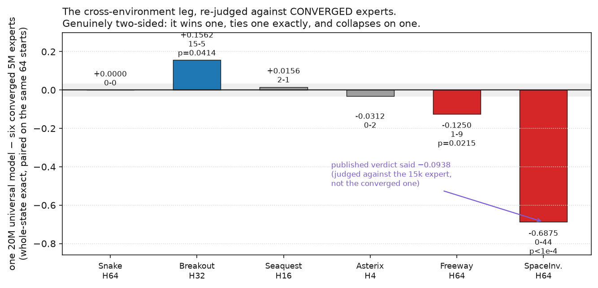
Re-judged against converged experts, the answer is genuinely two-sided. One 20M model beats six 5M specialists on Breakout H32 (+0.1562, 15-5, p=0.041), ties Snake exactly — 0 wins and 0 losses at every horizon, the same starts solved — and sits within noise on Asterix and Seaquest. It then collapses on SpaceInvaders H64: −0.6875, 0 wins against 44 losses. The old baseline priced that at −0.094, understating it 7.3×.
SpaceInvaders is the one environment whose ceiling is exactly 1.000 — pure estimation error, the only clean capacity target on the bench. So the universal model's collapse there is a capacity story rather than a new mystery, and it is consistent with what the specialist result already said.
One detail worth keeping: the 5M universal reads +0.0000
on Breakout H32 with thirteen wins and thirteen losses. Identical score,
disjoint competence. An aggregate-only table would have called those two models
equivalent — which is why every comparison here is paired on the per-start outcome
vector rather than on means.
Everything above on the 3-D tier was either single-agent or model-free, because the voxel corpus generator hard-coded one agent. Two multi-agent corpora now exist and are verified: voxel_crowd8 (15×15×8, N=8, 93.1% of state shared, D_compose 0.0039 — the world held fixed against the published single-agent corpus) and voxel_crowd32 (12×12×8, N=32, 61.4% shared, D_compose 0.1055 — where the mechanism should be loudest). Both report because a claim that survives only at the crowded end is a different claim from one that holds at both.
The evaluator now scores the split the model-free result says matters —
shared_exact against agent_exact_mean — from slices the
codec owns rather than a second local copy. Pre-registered: per-agent exactness
should far exceed shared-world exactness, with the gap widening from crowd8 to
crowd32. If they track each other instead, the trained model is not reproducing the
model-free structure, and that is a real negative about the framing rather than a
bug.
A top-down grid makes "one state, many views" nearly free, because every viewer shares the same world grid. A first-person voxel world puts the camera inside the state (yaw 0–7, pitch −2…2), so occlusion is real and partial observability is real.


The renderer is a separate, deliberately decoupled object: it maps authoritative state to pixels, so the same predicted state can be drawn in different themes. That is the "one state, many clients" property a real server has.


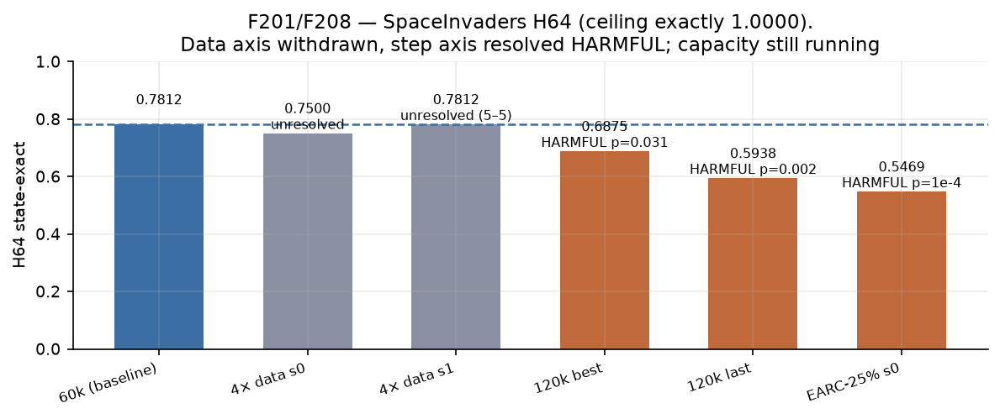
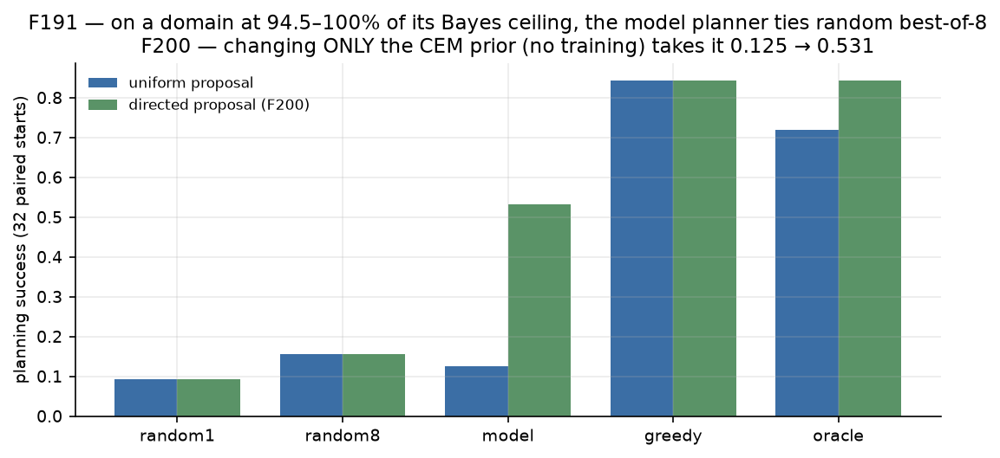
Full research programme, findings ledger (F1–F237) and stage reports live in the repository. Every figure on this page is generated from a JSON on disk or transcribed from a cited log line.